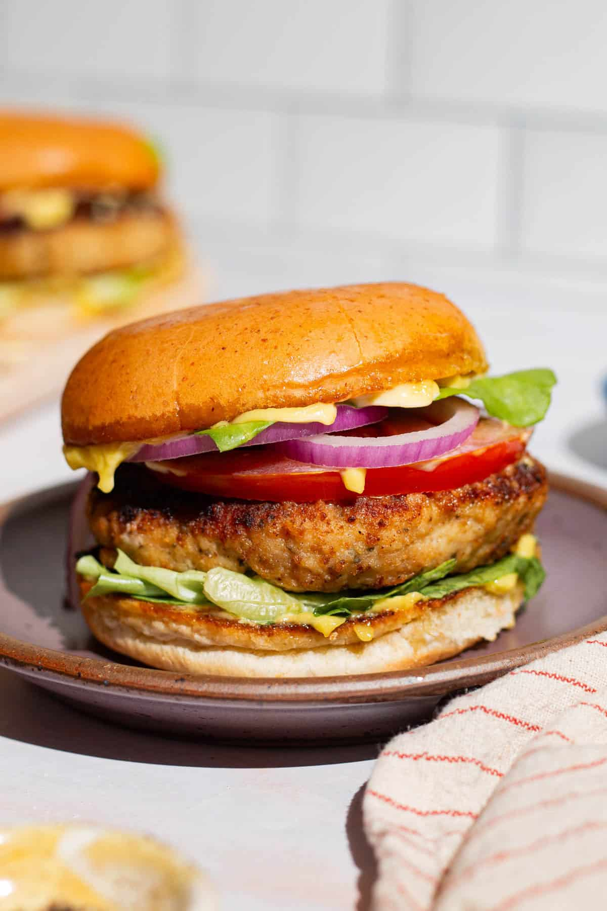

Ingredients:
- 1 chicken breast (boneless, skinless)
- 1 burger bun
- 1 slice of cheese
- 2 lettuce leaves
- 1 tomato (sliced)
- 1/2 onion (sliced)
- 2 tbsp mayonnaise
- 1 tsp mustard
- Salt & pepper to taste
- 1 tbsp oil (for frying)
Instructions:
- Season the chicken breast with salt, pepper, and a little mustard.
- Heat oil in a pan and cook the chicken breast for about 5 minutes per side until golden brown and fully cooked.
- Toast the burger bun lightly.
- Spread mayonnaise on the bottom bun, then add lettuce, tomato, and onion.
- Place the cooked chicken breast on top, add a slice of cheese, and cover with the top bun.
- Serve with fries or a side salad.